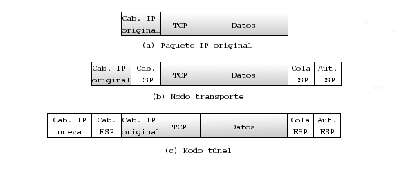

IPv4, el protocolo de red utilizado en Internet, carece por completo de cualquier tipo de seguridad en las comunicaciones. IPv6, la que está llamada a ser la siguiente versión del protocolo, sí proporciona en cambio un conjunto de medidas y protocolos para garantizar comunicaciones seguras en esta capa. Ese conjunto de medidas y protocolos es comúnmente conocido por IPSec, y se pueden implementar sobre IPv4 realizando apenas algunas modificaciones en la pila de TCP/IP del sistema operativo anfitrión.
IPSec proporciona autenticación, confidencialidad e integridad mediante diversos mecanismos. Fundamentalmente sus bases son tres protocolos diferentes:
El funcionamiento de IPSec se basa en el intercambio de claves previo entre los extremos de una comunicación para el establecimiento de una Asociación de Seguridad o SA1.10. Esta necesidad de compartir información relativa a los interlocutores establece dos de las características claves de IPSec. Se trata de un protocolo unidireccional y orientado a conexión. Cada asociación de seguridad garantiza la seguridad en una dirección, por lo que si ambos interlocutores desean compartir información han de establecer cada uno su asociación de seguridad. Dicha asociación de seguridad se verifica en el campo SPI1.11 que se incluye en las cabeceras IPSec, y que será comparado en el destino con su SAD1.12, en la que se almacenan las asociaciones de seguridad conocidas en cada instante.
Una vez establecida dicha asociación, es posible enviar datos al otro extremo de dos formas diferentes. Bien modificando los paquetes IP originales para introducir las cabeceras adicionales, lo que se conoce como modo transporte, bien encapsulando el paquete original completo más las cabeceras AH o ESP dentro de uno nuevo, también denominado modo túnel.
En modo transporte, las cabeceras AH o ESP se insertan entre la propia cabecera IP y la carga útil del paquete (si se utiliza ESP, se incluyen cabeceras adicionales tras la carga útil del paquete).
En modo túnel se añaden los campos que correspondan según se utilice AH o ESP al paquete IP original, y dicho paquete se convierte en la carga útil de un nuevo paquete IP con direcciones de origen y destino no necesariamente iguales a las originales. Este modo suele utilizarse cuando se dispone de al menos una pasarela de seguridad en uno de los extremos. Los paquetes viajan por la red sin que ningún dispositivo intermedio pueda acceder a la cabecera IP o los contenidos originales. Estas características hacen del modo túnel el ideal cuando se quiere crear una VPN sin que necesariamente ambos extremos de la comunicación tengan soporte específico para IPSec, ya que el túnel se puede crear en las mencionadas pasarelas de seguridad.
|

|